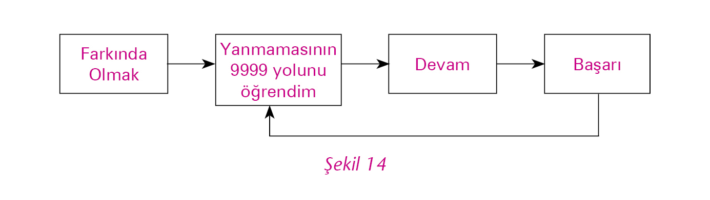

Öner toplantı odasına girdiğinde neşeli bir ortam vardı. Akın da oradaydı. Güler’in yaptığı keki yiyerek sohbet ediyorlardı. Öner, içinden, “Umarım hep böyle gider,” dedi ve herkese “Günaydın,” diyerek yerine oturdu.
Güler, Öner’e de bir dilim kek koyarken, “Nasılsınız?” diye sordu.
Öner, “Çok iyiyim,” diye yanıtladı. “Üç günlük çalışmanızın nasıl geçtiğini merak ediyorum.”
Rıza, “Anlatılmaz yaşanır derler ya, işte öyle,” dedi gülerek.
Zeki, “Bize bu fırsatı verdiğiniz için teşekkür ederiz,” derken doldurduğu çayı Öner’in önüne koydu.
Öner kekinden bir parça alarak keyifle, “Sizlerden bunu duymak çok güzel,” dedi.
Güler, “Sizi de Tek Yumruk Takımı’nın bir parçası olmaya davet ediyoruz,” dedikten sonra arkadaşlarına bakarak devam etti, “Tek bir yumruk olarak sorunlarımızı ezip geçeceğiz.”
Tek Yumruk Takımı üyeleri tek tek söz alarak heyecanlarına ortak olan Öner’e bu üç günün özetini yaptılar.
Mehmet: “Otelde yediğimiz yemekte de konuştuğumuz gibi, vizyonumuzu altı ay içinde satışlarımızı % 100 artırmak ve bunu yaparken kâr marjımızı düşürmemek olarak koyduk.”
Billur: “Bunu yaparken bir taraftan da geleceğe yönelik ürünler tasarlayacağız.”
Abdullah: “Yaşadığımız sorunlar üzerine konuşurken, sürekli yangın söndürdüğümüzü, yan etkisi yüksek çabuk çözümlerden başımızı kaldıramadığımızı ve bu durumun aramızdaki ilişkilere büyük zarar verdiğini fark ettik,” dedikten sonra üzerinde çalıştıkları neden analizini Öner’e gösterdi.
Öner: “Bu analiz son derece anlamlı görünüyor. Peki nereden başlayacaksınız.”
Güler: “Bir seferberlik başlatacağız, ilgili herkesten yardım alacağız. İçerdeki yangını hafifletirken bir taraftan da içinde bulunduğumuz kısırdöngüyü kırmamızı sağlayacak yeni ürünler üzerinde çalışacağız.”
Rıza: “Öner, bundan böyle Pazartesi Toplantıları’mızı bu çalışmaya ayıralım istiyoruz. Biz bir süre Pazartesi Toplantıları dışında da haftada üç-dört akşam toplanacağız. Pazartesi Toplantıları sayesinde seni de bilgilendirmiş oluruz. Aslında vakit bulduğun tüm toplantılarımıza katılabilirsen iyi olur.”
Zeki: “Peter Senge’nin yazdığı bir makaleyi Akın Bey’den ödünç almıştım. Dün gece onu okudum. Yeni ürün stratejilerimizi belirlerken kesinlikle dikkate almamız gereken bir makale.”
Billur: “Bize de anlatır mısın?”
Zeki: “Peter Senge, bu makalede yeni ekonominin nasıl bir şey olacağından bahsediyor. Hepinize okumanızı tavsiye ederim ama özetle şunları söylüyor: ‘Ancak doğayı örnek alan sistemler uzun vadede ayakta kalabilecek. Doğadaki üretim sistemleri döngüsel, her çıktı bir diğerinin girdisi oluyor, yani sıfır atıkla yaşanıyor. İnsan yapısı üretim sistemleri böyle değil. Üretim için kullandığımız girdileri alırken atık oluşturuyoruz, üretim sürecimizde de atık oluşturuyoruz. Kullanılan ürünlerin kendileri bir süre sonra atık oluyor, yani hiçbiri üretim sürecine geri dönmüyor. Diğer taraftan ekonomilerimiz büyüme üzerine kurulu, daha çok satmak, bunun için de daha çok talep yaratmak ve daha çok üretmek istiyoruz. Daha çok ürettikçe, yani daha çok büyüdükçe, daha çok kaynağı atık oluşacak şekilde kullanıyoruz. Ancak gezegenimiz sonsuz kaynaklara sahip değil ve son hızla oluşturduğumuz atıklar için de yeterince yer yok. Yaşadığımız gezegene, yani kendi geleceğimize zarar vermeye başladık. Bu anlamdaki bir büyümeyle daha fazla devam etmenin sonuçları çok ağır olacaktır. Büyümeyi yeniden tanımlamalı, doğayı kendimize örnek almalıyız.’”
Abdullah: “Bu söylediklerin tüm üretim süreçlerimizi yeniden yapılandırmayı gerektirir. Böyle bir yükün altından nasıl kalkarız?”
Güler: “Yapabileceklerimizle başlayabiliriz. Biz döşemelik ve perdelik kumaş imal ediyoruz. Müşterilerimiz ise büyük oteller, restoranlar ve dekorasyon mağazaları. Oteller, restoranlar üç-dört yılda bir kendini yenilemek istiyor. Aynı şey evlerimiz için de geçerli, sıkılıyoruz, modası geçti diyoruz ve imkânlarımız yetiyorsa perdelerimizi ve koltuk-kanepe kumaşlarımızı değiştiriyoruz. Burada oluşan atığı bir düşünsenize.”
Mehmet: “İyi de Güler, ne yapabiliriz? İnsanlara döşemelerinizi ve perdelerinizi on beş-yirmi yıl değiştirmeyin, yaşadığımız gezegene zarar veriyoruz diyemeyiz ki. Bir de bunu yaptıklarını düşünsene, batarız. Moda diye sık sık değiştirdikleri halde satış konusunda sıkıntılar yaşıyoruz. Satışlarımızı % 100 artırmak yerine % 100 düşürürüz.”
Güler: “Satmak yerine kiralayalım.”
Rıza: “Biraz daha açar mısın? Kiraladığımız kumaşları, insanlar onlardan sıkılınca yenileriyle değiştireceğiz. Eskiler elimizde kalacak. Peki elimizde kalan bu kumaşları ne yapacağız?”
Abdullah: “Sanırım ben burada devreye gireceğim. Üretim sistemlerimizi eski kumaşları tekrar işlemeye uygun hale getirebilirim. Bu kumaşlar üç-dört yılda ne kadar eskiyor?”
Billur: “Ne kadar kullanıldığına göre değişir. Teyzem perde ve döşemelerini değiştirdiğinde genellikle içimi acıtacak kadar yeni olurlar.”
Abdullah: “Bu durumda, az kullanılmış kumaşları çok fazla yatırım gerektirmeyen birkaç işlemden sonra tekrar kullanılabilir duruma getirebiliriz, ancak çok kullanılmışları tamamen ayrıştırıp tekrar üretime sokmak gerek, bu da ciddi bir maliyet demek.”
Billur: “Bu proje doğaya dost ve özel bir proje. Bu tarz projeler için uzun dönemde geri ödenen düşük faizli destek kredileri bulabiliriz.”
Zeki: “İnsanlara aylık ya da yıllık kira karşılığı döşemelik ve perdelik kumaş vereceğiz, istediklerinde ise yeni bir kira bedeli karşılığı bunları değiştireceğiz. Bu durumda hangi kumaştan ne kadar üreteceğimizin kararını biz verebiliriz. Talebi kendimiz yaratacağız. Neden analizimizdeki sorunların düğümlendiği yer olan farklı özelliklerdeki küçük siparişleri alma durumumuz da böylece ortadan kalkar, bunun yol açtığı yüksek maliyet, kalite sorunları, teslim gecikmeleri sıkıntılarından da kurtuluruz.”
Rıza: “Öner, bunu gerçekleştirebilirsek, kendi satış mağazalarımızı açma hayalimizi de gerçekleştirebiliriz. Aslında bu mağazalar sayesinde kullanıcıya direkt ulaşabilir ve kiralama sistemimizi yaygınlaştırabiliriz.”
Öner: “Biz gerçekten bir Pazartesi Toplantısı mı yapıyoruz? İnanamıyorum. Bu fikir ilk başta çılgınca ve ütopik geliyor, diğer yandan çok başarılı olabilir. En önemlisi müthiş heyecan verici ama iyi planlamak, tüm maliyetleri, faydaları, olası riskleri ortaya koymak gerek. Bir de bunu yaparken şu anki yangını söndürmek için neler yapmamız gerektiğine bakmak lazım, yoksa bu fikri uygulamaya dönüştürme fırsatını hiçbir zaman bulamayabiliriz.”
Zeki, “Öner Bey hiç merak etmeyin, yarından itibaren neden analizimizdeki diğer sorunlar üzerinde de çalışmaya başlayacağız.”
Bütün konuşulanları sessizce dinlemiş olan Akın: “Çok etkilendiğimi ve heyecanlandığımı söylemek istiyorum,” dedi. “Sizler tüm sonuçlarınızı farklılaştıracak bir düşünsel model değişikliği üzerine konuşuyorsunuz.”
Akın salondaki tahtanın başına giderek, çizdiği şekil l2’nin üzerine konuşmaya başladı, “Eğer sonuçlarımızı değiştirmek istiyorsak, davranışlarımızı değiştirmeliyiz, davranışlarımızı değiştirmek için ise davranışlarımızın altında yatan düşünsel modellerimizi değiştirmeliyiz, bunun için ise düşünsel modellerimizin farkına varmalıyız. Başka bir deyişle her düşünsel model bir davranışa, o davranış da bir sonuca yol açar. Sonuca yol açan davranışımızın ve buna yol açan düşünsel modelimizin farkında olmadığımızda sonuçları değiştirebilme gücümüzü de fark edemeyiz.
“Sonuç çıkarma merdivenini hatırlayın; düşünsel modellerimizi veriler üzerine oluştururuz. Veriler aynı olduğu halde farklı kişiler merdiveni farklı şekillerde çıkarlar ve farklı düşünsel modellere ulaşırlar. Bu farklı düşünsel modeller de farklı davranışlara ve farklı sonuçlara yol açar. Merdivenin altında yer alan verileri değiştiremeyiz ama onlara daha geniş bir perspektiften bakabilir ve onların üzerine inşa ettiğimiz düşünsel modelleri ve düşünsel modellerimizin yönlendirdiği eylemlerimizi değiştirebiliriz.
“Bir örnek vermek istiyorum. Edison’un ampulü yakmayı başarmasıyla ilgili olarak anlatılan bir olay vardır. Buradaki sayı farklı yerlerde farklı şekillerde ifade edilmektedir. Ben bu sayıya 9999 diyeceğim. Edison 9999 deneyde ampulü yakamaz. Ona 9999 kez ‘Başaramadın, vazgeç,’ derler. Edison, ‘Ampulü yakamamanın 9999 yolunu buldum, çok yakınım,’ diye cevap verir. Sonraki deneyde ampulü yakar.”
Akın şekil 13’ü çizerken açıklamaya devam etti: “Merdivenin altındaki veri aynı. 9999 deneyde ampul yanmadı. Merdiveni ‘9999 kez başaramadım’ diye çıkabilirsiniz. Bu, başarılı bir duygusal zekâ kullanımı sayılmaz. Umutsuzluk ve çaresizlik duyguları uyandırır. Dolayısıyla yol açacağı davranış vazgeçmek olacaktır.”
Şekil 14’ü çizen Akın devam etti, “Edison aynı veri üzerindeki merdiveni farklı çıkar: ‘Ampulü yakamamanın 9999 yolunu öğrendim,’ der. Bu düşünsel model, devam etme davranışını doğurarak farklı bir sonuca ulaştırır ve Edison’a, adını bugün herkesin bilmesini sağlayan bir başarı getirir.”

Akın, “Başka bir örnek verelim,” diyerek şekil 15’i çizdi. “Veri: ‘Bilgi işlemden yardım istedik, yanıt vermediler, toplantımıza davet ettik, gelmediler.’ Düşünsel Model 1: ‘Bu adamlarla bir yere varılmaz, bu proje bizden başka kimsenin umurunda değil.’”
Akın şekil 16’yı çizerken şu açıklamayı yaptı: “Veri: ‘Bilgi işlem bölümünden yardım istedik, yanıt vermediler, toplantımıza davet ettik, gelmediler.’ Düşünsel Model 2: ‘Vizyonumuzu onlarla yeterince paylaşamadık ve katkılarının önemini vurgulayamadık.’”
Akın, “Şimdi bunu sizin durumunuza uyarlayalım,” diyerek şekil 17’yi çizdi ve konuşmasına devam etti:
“Elimizdeki veri: ‘Satışlarımız düşüyor.’ Bugüne kadar bizi yönlendiren düşünsel model, yaptığımız işi daha iyi/daha fazla yapmalıyız olmuş. Satışlarımızı artırmak için daha saldırgan bir satış politikası izlemiş, daha zorlu siparişleri almışız, bunların yan etkileri bizi daha da sıkıntıya sokmuş ve sorunlarımızdan kurtulmak için aynı davranışlara ısrarla ve artırarak devam etmişiz.
“Bu kısırdöngüyü kırmanın tek yolu, onun farkına varmaktan ve altında yatan düşünsel modeli görmekten geçer. Bu aslında hiç de kolay bir beceri değildir. Bu, yaratıcı öğrenme ya da çift boyutlu öğrenme denen, Öğrenen Organizasyon’ların temelinde yatan bir beceridir. Bu sabah yaptığınız konuşmalar, farkına varıp sorguladığınız düşünsel modeller beni çok etkiledi. Şu anda, birlikte geçirdiğimiz üç gün içinde konuştuğunuz konulara farklı bir düşünsel modelle yaklaştığınızı görüyorum,” dedikten sonra şekil 18’i çizmeye başladı.

“Yaptığımızın daha fazlasını ve daha iyisini yapmalıyız düşünsel modelimizin ve bu düşünsel modelin yol açtığı davranış ve eylemlerimizin ve elde edilen sonuçların farkına varmamız çizimdeki gibi yeni bir düşünsel model geliştirmemizi sağladı.
“Yaptığımız işi sorguladık ve onu daha farklı yapabileceğimizi fark ettik. Bu da bizi kiralama, geri dönüşümlü üretim sistemleri tasarlama, kendi mağazalarımızı açma şeklinde farklı davranışlara götürecek gibi görünüyor. Bu davranış ve eylemlerin yaratacağı sonuçları ise hep birlikte göreceğiz.”
Mehmet, “Akın Bey,” dedi, “bir kez daha teşekkür ederim. Bu açıklamalarınızla yaşadığımız süreci sanki bir aynaya bakar gibi görebildim. Haklısınız zor bir şeyi başardık. Galiba bunu, yani sizin deyiminizle yaratıcı öğrenmeyi gerçekleştirdik, çünkü biz öğrenen bir takım olmayı başardık.”
Rıza söze girdi, “İşte Öğrenen Organizasyon’ların en sevdiğim yanı bu oldu,” dedi. “Reçeteler sunmuyor. Başlangıçta Akın Bey ve Emin Bey’in sorunlarımızı inceleyip teşhis edip bize çözüm önerileri sunarak ahkam keseceklerini düşünmüştük. Açıkçası böyle bir yaklaşımın işe yarayacağına hiçbir zaman inanmadım. Bu nedenle de danışmanlarla çalışmayı sevmem. Öğrenen Organizasyon yaklaşımının ise doğrusu ve yanlışı, tüm durumlar için geçerli olan yanıtları ve reçeteleri yok. Bugün başarımızı sağlayan düşünsel model, yarın sorunlarımızın nedeni olabilir, bir durumda çok işe yarayan bir düşünsel model, bir diğerinde tam tersi sonuç yaratabilir. Bu nedenle öğrenmek, birlikte öğrenmek, elde ettiğimiz ya da edemediğimiz sonuçlara yol açan davranış ve eylemlerimize ve bunlara yol açan düşünsel modellerimize ayna tutup onları görmeyi başarmak zorundayız. Gerçek öğrenme bu beceride saklı, hazır yanıtların peşinden koşup onları ezberlemekte ve tekrarlamakta değil.”
Öner, “Birlikte heyecan verici bir yolculuğa çıktık. Birbirimize ve kendimize olan inancımızı ve güvenimizi yitirmessek çok iyi sonuçlar alacağımıza inanıyorum. Hepinize teşekkür ederim,” diyerek toplantıyı bitirdi.
Çağlar ve Öner, karşılıklı oturmuşlardı. Çağlar’ın önünde ayran, Öner’in elinde ise çay vardı.
Öner, “Çağlar,” dedi, “son günlerde sohbet edemedik. Neler gözlemlediğini merak ediyorum.”
“Öner Amca, iyilik yapmamanın nedenlerinden birisinin, birbirini dinlememek olduğunu fark ettim. Abdullah Amca ile Mehmet Amca artık birbirlerini dinliyorlar, kavga etmiyorlar ve ikisi de daha mutlu görünüyor. Dün toplantılarına katıldım. Abdullah Amca’nın orada çalışan ağabeyler de vardı. Toplantı biterken, ‘Bizi dinlediğiniz için teşekkür ederiz, başlangıçta yöneticilerimizle toplantı yapacağımız için çok gergindik ama siz bizi dikkatle dinlediniz. Biz de elimizden geleni yapacağız,’ dediler.”
“Çağlar bu konuda sana katılıyorum. Daha önce dinlemek der geçerdim. Bu kadar önemli ve zor olduğunu bilmiyordum. Çoğu zaman birisi konuşurken susup konuşmasını bitirmesini beklemenin dinlemek olduğunu düşünürdüm. Dinlemek çok daha farklı bir şey aslında, kendi düşüncelerini, ne diyeceğini bir tarafa bırakıp tüm enerjini karşıdakini anlamaya vermen demek. Son zamanlarda etrafımdakileri dinlemek için yoğun bir çaba harcıyorum.”
“Eskiden annem beni dinlemezdi. Yani dinlerdi de dinlemezdi. Ben ona okulda olanları anlatırdım, sıkılıyor gibi gelirdi bana. Sonra ilgisiz bir şey sorar ya da ne yapmam gerektiğini söylerdi. Ben de ona anlatmayı bırakmıştım. Bizim takımla ve Pelin Teyze’yle tanıştıktan sonra beni dinlemeye, ama gerçekten dinlemeye başladı. Galiba annem babamı da etkiledi. Bir süre sonra ikisi benim en iyi arkadaşım oldular. Pek çok arkadaşım anne ve babasıyla konuşmayı sevmiyor, çünkü anne-babaları onları dinlemiyor, yani annemin şimdi beni dinlediği gibi dinlemiyor.”
“Çağlar, ben de çocuklarımı dinlemedim. Aslında senin dışında hiçbir çocuğu gerçekten dinlemedim. Onlar konuşurken susup bitirmelerini beklerdim. Yüzeysel bir-iki söz söyleyerek ilgilendiğimi gösterirdim ya da gösterdiğimi sanırdım. Bir çocuk benim gibi bir yetişkine ne söyleyebilir ki, diye düşünürdüm. Şimdi çok yanıldığımı fark ediyorum. Çocuklarımla arkadaş olma şansını kaçırmışım.”
“Arkadaşlarımla dinleme konusunu paylaşacağım. Neden analizimiz için çok önemli bir neden saptadık. İnsanlar iyilik yapmıyor, çünkü birbirlerini dinlemiyorlar, çünkü dinlemenin susup karşıdakinin konuşmasını bitirmek olduğunu sanıyorlar. Bir de çocukları dinlemiyorlar. Çünkü çocukların yetişkinlere söyleyebilecekleri bir şeyleri olacağına inanmıyorlar. Üstelik bu nedenle ilgili bir şeyler yapmaya hemen başlayabiliriz.”
“Neler yapacağınızı merak ediyorum. Bu konuda yaptıklarınızı benimle de paylaşır mısın?”
“Öner Amca, neden bir toplantımıza katılmıyorsunuz, hem arkadaşlarımla da tanışmış olursunuz.”
“Çok isterim Çağlar.”